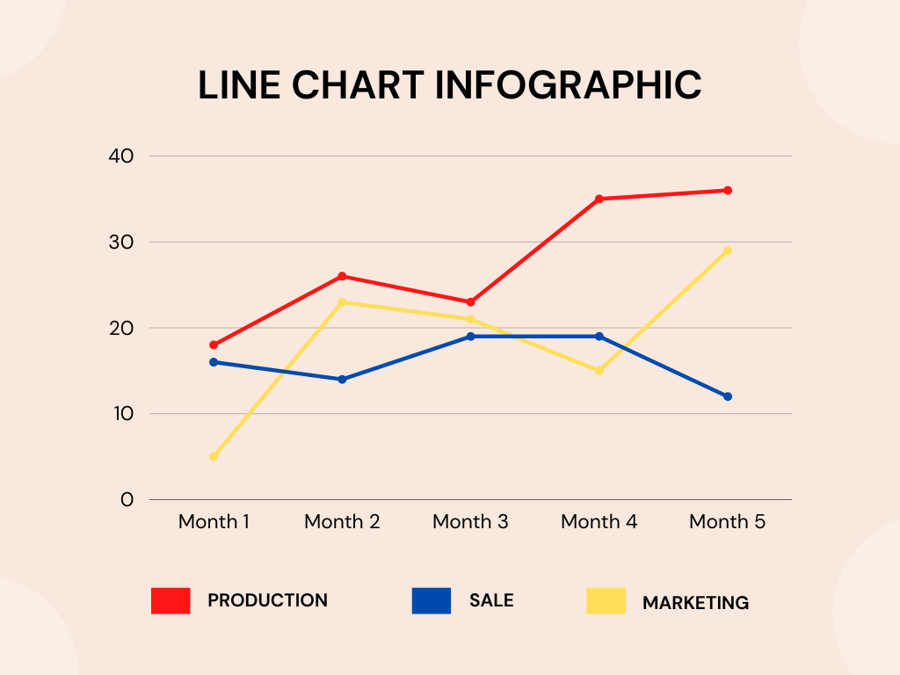
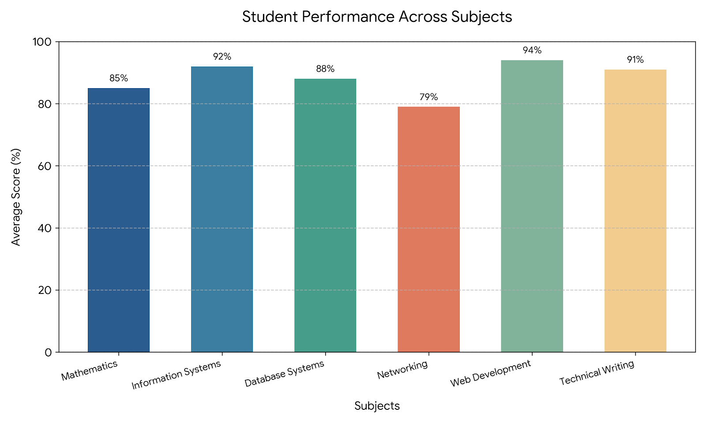
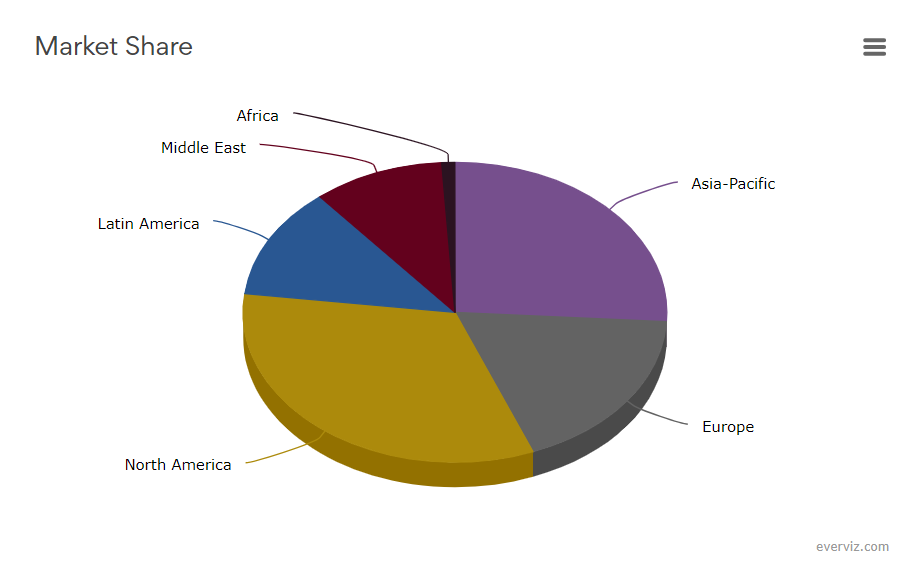
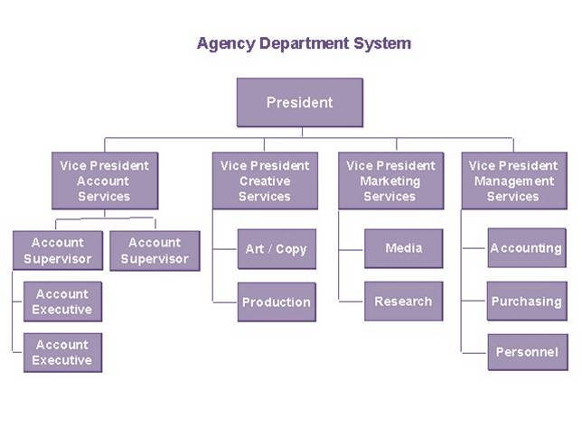
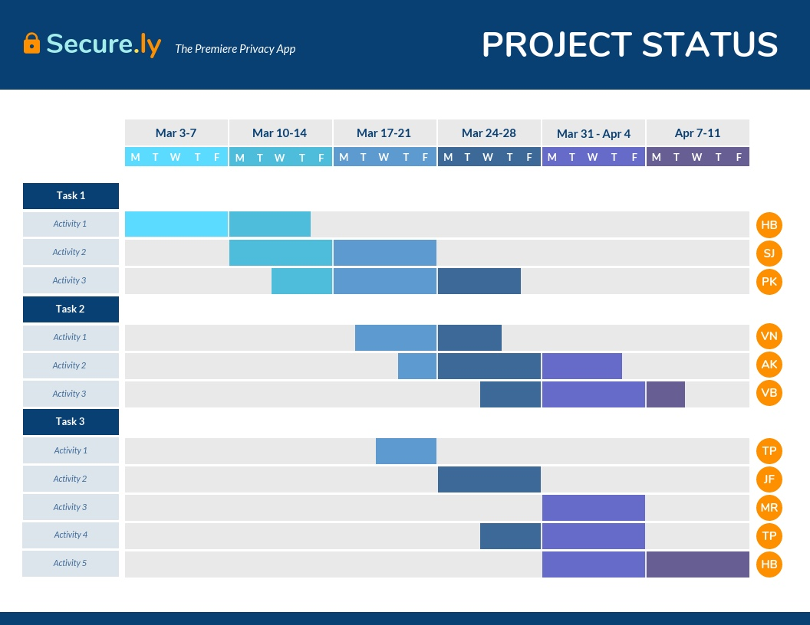

Introduction
Graphs and charts — also called graphic aids — are essential tools in technical writing. They transform complex data into visual formats that are easier to understand, compare, and remember.
Key Definition
Graphic aids are visual tools — such as graphs, charts, tables, and diagrams — used in technical documents to present data clearly, enhance reader understanding, and support the written text.
Purpose of Graphs and Charts
- Enhance the impact of a report
- Help readers visualize relationships between numbers
- Provide additional context and different ways to digest complex information
- Simplify complicated textual descriptions
- Show trends, comparisons, and distributions at a glance
Types of Graphs
1. Line Graph
Shows data that changes continuously over time. Used for trends and predictions.

2. Bar Graph
Compares several categories of data using rectangular bars.

3. Histogram
Shows the distribution of numeric data across categories.
4. Pictograph
Uses pictures or symbols to represent data. Effective for general audiences.
5. Scatter Plot
Shows the relationship between two variables. Used to identify correlations.
Types of Charts
1. Pie Chart
Displays the number and relative size of divisions of a subject. Best for showing parts of a whole.

2. Flowchart
Shows the sequence of steps in a process or procedure.

3. Organization Chart
Maps divisions and levels of hierarchy within an organization.

4. Gantt Chart
Indicates timelines for multi-stepped projects.

Other Visual Aids
- Tables — Place detailed data in rows and columns for comparison.
- Diagrams — Identify parts of a subject and their spatial relationship.
- Illustrations — Depict information using pictorial detail.
- Maps — Show distribution of data using a geographic map.
How to Choose the Right Graph or Chart
| Your Goal | Best Visual Aid |
|---|---|
| Show trends over time | Line graph |
| Compare categories | Bar graph |
| Show distribution of data | Histogram |
| Show relationship between two variables | Scatter plot |
| Show parts of a whole | Pie chart |
| Show steps in a process | Flowchart |
| Show project schedule | Gantt chart |
| Compare detailed data | Table |
Reading and Interpreting Data
- Title — What is the graph about?
- Axes — What do the X and Y axes represent?
- Scale — What units and increments are used?
- Labels — Are categories clearly labeled?
- Legend — What do colors or symbols mean?
- Source — Where did the data come from?
Design Principles for Graphs and Charts
- Clarity — Avoid clutter; every element should serve a purpose.
- Accuracy — Do not distort scales to mislead readers.
- Consistency — Use the same colors and styles across related charts.
- Accessibility — Use colorblind-friendly palettes.
- Honesty — Present data truthfully without cherry-picking.
Self-Check
1. Which graph type is best for showing trends over time?
Line graph.
2. Which chart is best for showing parts of a whole?
Pie chart.
3. What is a Gantt chart used for?
Showing project timelines and task durations.
References
- Mitante, E. J. L. (n.d.). Types of Technical Reports — Visual Aids section [Lecture slides]. City College of Calapan.
- Mitante, E. J. L. (n.d.). Why People Write — Illustration section [Lecture slides]. City College of Calapan.
- Mitante, E. J. L. Visual aids guide.
- Saskatchewan OER. (n.d.). Technical communication for TCOM 104.